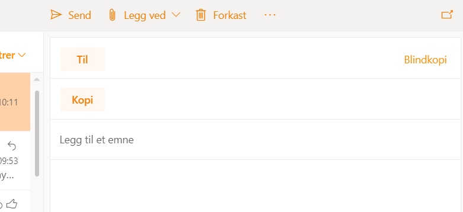

Bruk Til: for de som trenger å gjøre noe med meldingen din. Eksempel:
Bruk Kopi: for de som også trenger å bli informert. I eksemplet over er det nyttig å bli informert for dem som arbeider med kortene.

Alltid farlig å bruke dette alternativet. Likevel er det en slags melding der Blindkopi kan brukes (jeg synes det
burde i forbindelse med privacy).
Eksempel:
Da vil ikke den ene adressaten se hvilke andre adressaten har fått samme beskjed. Mange mennesker setter stor pris på når en bruker denne metoden.